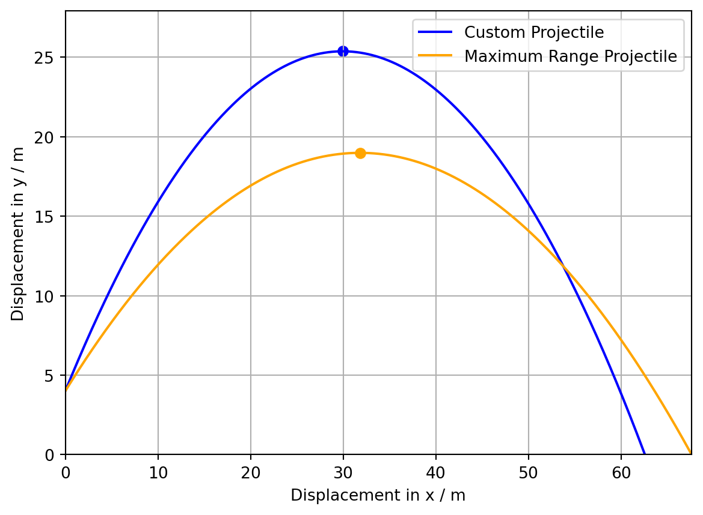

import matplotlib.pyplot as plt
import numpy as np
import mathBPhO Computational Challenge 2024: Challenge 6: Calculating the Distance Travelled by a Drag-Free Projectile using Integration
Python
BPhO Computational Challenge
Computational Physics
Projectile Motion
The solution to the sixth challenge of the BPhO Computational Challenge 2024, calculating the distance travelled by the projectile, the length of the inverted parabolic arc, using integration.
DISCLAIMER: This is just a snippet of our submission for the competition, since the final product was an application 2800 lines of code in length. To see the two minute video submission detailing the entire solution with my partner watch the video here: https://youtu.be/ViT6NdrrbJo .
# Retrieve parameters
u = 25
angle = 55
h = 4
g = 9.81# Converts from degrees to radians
theta = (angle * np.pi) / 180# Resloves forces into horizontal and vertical component
costheta = math.cos(theta)
sintheta = math.sin(theta)
ux = u * costheta
uy = u * sintheta# Calculates the range and time of flight of the projectile
R = (u**2 / g) * (sintheta*costheta+costheta*math.sqrt(sintheta**2 + ((2 * g * h) / (u**2))))
tflight = R / (u * costheta)# Creates an empty arrary for the x and y coordinates of the trajectory
x = []
y = []
# Plots the parabolic path of the projectile with a timestep of 0.01s across an interval of tflight
for i in np.arange(0, tflight, 0.01):
t = i
x.append(ux * t)
T = t * t
y.append(h + (uy * t) - (0.5 * g * T))# Apogee calculation
apy = (0 - (uy*uy)) / (2 * g * -1) + h
tflight0 = 2 * uy / g
apx = (ux * tflight0) / 2# Generates the calculated values text
# Time of flight phrase
print("Time of flight for custom projectile = " + str(round(tflight, 2)) + " s")
# Range phrase
print("Range for custom projectile = " + str(round(R, 2)) + " m")
# Distance travelled calculation
lim1 = np.tan(theta)
lim2 = np.tan(theta) - (g * R) / (u**2) * (1 + np.tan(theta)**2)
sc = u**2 / (g * (1 + np.tan(theta)**2))
lim1_calc = 0.5 * np.log(abs(np.sqrt(1 + lim1**2) + lim1)) + 0.5 * lim1 * np.sqrt(1 + lim1**2)
lim2_calc = 0.5 * np.log(abs(np.sqrt(1 + lim2**2) + lim2)) + 0.5 * lim2 * np.sqrt(1 + lim2**2)
s = sc * (lim1_calc - lim2_calc)
# Distance travelled phrase
print("Displacement for custom projectile = " + str(round(s, 2)) + " m")
# Calculates maximum theta
u2 = u * u
tgh = 2 * g * h
tghu2 = (tgh) / (u2)
arc = (1 / (math.sqrt(2 + tghu2)))
thetamax = np.arcsin(arc)
max_ux = u * math.cos(thetamax)
max_uy = u * math.sin(thetamax)
# Creates an empty array for the x and y coordinates of the trajectory
max_x = []
max_y = []
# Calculates the range and time of flight of the projectile
max_R = (u**2 / g) * math.sqrt(1 + (2 * g * h/ u**2))
max_tflight = max_R / max_ux
# Plots the maximum range projectile
for max_i in np.arange(0, max_tflight, 0.01):
max_t = max_i
max_x.append(max_ux * max_t)
max_T = max_t * max_t
max_y.append(h + (max_uy * max_t) - (0.5 * g * max_T))
# Apogee calculation
max_apy = (0 - (max_uy*max_uy)) / (2 * g * -1) + h
# Compares the y values of the two apogees to set the y limit
def compapy(apy, max_apy):
if apy > max_apy:
return apy
else:
return max_apy
y_graph = compapy(apy, max_apy) * 1.1
# Generates the calculated values text
# Time of flight phrase
print("Time of flight for maximised range projectile = " + str(round(max_tflight, 2)) + " s")
# Range phrase
print("Range for maximised range projectile = " + str(round(max_R, 2)) + " m")
# Max distance travelled calculation
maxlim1 = np.tan(thetamax)
maxlim2 = np.tan(thetamax) - (g * max_R) / (u**2) * (1 + np.tan(thetamax)**2)
maxsc = u**2 / (g * (1 + np.tan(thetamax)**2))
maxlim1_calc = 0.5 * np.log(abs(np.sqrt(1 + maxlim1**2) + maxlim1)) + 0.5 * maxlim1 * np.sqrt(1 + maxlim1**2)
maxlim2_calc = 0.5 * np.log(abs(np.sqrt(1 + maxlim2**2) + maxlim2)) + 0.5 * maxlim2 * np.sqrt(1 + maxlim2**2)
maxs = maxsc * (maxlim1_calc - maxlim2_calc)
# Max distance travelled phrase
print("Displacement for maximised range projectile = " + str(round(maxs, 2)) + " m")
#Time of flight calculation
max_tflighta = 2 * max_uy / g
max_apx = (max_ux * max_tflighta) / 2
# Creates the figure
fig, ax = plt.subplots()
# Sets parameters of the plot
ax.set_xlabel("Displacement in x / m")
ax.set_ylabel("Displacement in y / m")
ax.set_ylim(0, y_graph)
ax.set_xlim(0, max_R)
# Plots graphs and apogees
ax.plot(x, y, color="blue", label="Custom Projectile")
ax.plot(max_x, max_y, color="orange", label="Maximum Range Projectile")
ax.scatter(apx, apy, color="blue")
ax.scatter(max_apx, max_apy, color="orange")
ax.grid()
ax.legend(loc="upper right")Time of flight for custom projectile = 4.36 s
Range for custom projectile = 62.55 m
Displacement for custom projectile = 81.2 m
Time of flight for maximised range projectile = 3.72 s
Range for maximised range projectile = 67.59 m
Displacement for maximised range projectile = 77.7 m